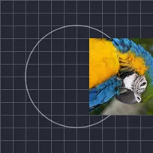

Langs pad bewegen

Plaatst de laag ergens langs de omtrek van de laag direct eronder.
Instellingen
| Instelling | Type | Bereik | Standaard |
|---|---|---|---|
| Voortgang | Getal | 0% tot 100% | 0% |
| Oriëntatie | Hoek | -3600° tot 3600° | 0° |
| Automatisch draaien | Aan of uit | – | Aan |
| Binnen/buiten | Getal | -500 tot 500 | 0 |
| Verschuiving | Punt (X, Y) | -5000 px tot 5000 px | 0 px, 0 px |
| Oude coördinaten | Aan of uit | – | Uit |
| Stijl | Keuze | Klassiek, Standaard | Standaard |